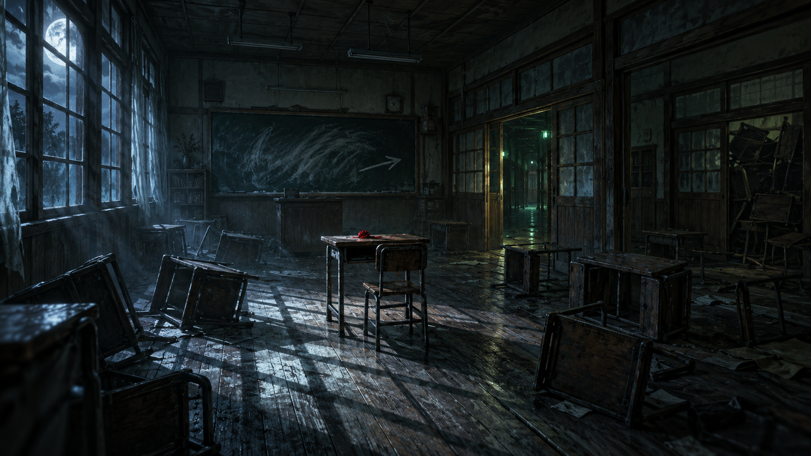
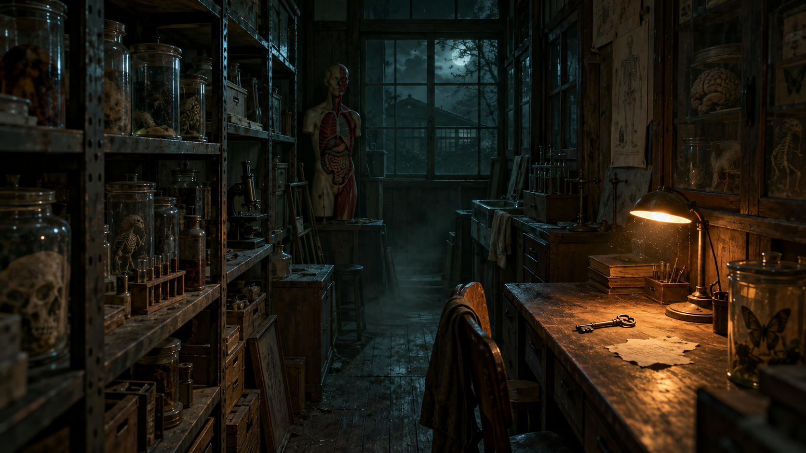

LEVEL DESIGN WORKSHOP ／ HORROR BLOCKOUT
夜の旧校舎 ― 保健室へコンセプトシート ＆ コンセプトアート
目を覚ますと、夜の旧校舎の教室にいた。
廊下の奥、鍵のかかった保健室にたどり着かなければ、ここからは出られない。
制作時間120分
作るものエリア1つ
手法ブロックアウト
プレイ時間の目安3〜5分
学籍番号：氏名：
01コンセプト
どんなエリア？
| 舞台 | 山あいの廃校になった木造旧校舎、2階。夜。 |
|---|
| 視点 | 一人称。武器なし。懐中電灯だけ。 |
|---|
| 目的 | 教室で目覚め → 鍵を見つけ → 保健室に入る |
|---|
| 空間 | 教室・北廊下・準備室・曲がり角（東廊下）・保健室 の5空間 |
|---|
| 長さ | 迷わず歩いて3〜5分。
一度ゴールの扉を見て → 鍵を取りに戻る → 同じ道を引き返す |
|---|
プレイヤーに感じてほしいこと
「静かすぎる学校は、こんなにも怖い」
- 知っているはずの場所（学校）が、夜になると知らない場所に見える
- 何も起きない時間が長いほど、何かが起きる予感が強くなる
- 鍵を手に入れて安心した帰り道で、一番怖いことが起きる
ムードキーワード
静寂ノスタルジー孤独ちらつく蛍光灯月明かり木の床のきしみ見えない角の先赤い非常灯
やらないこと（このエリアの雰囲気に合わない）：
血まみれ・ゴア表現大量の敵広すぎる空間迷路明るい照明
カラーパレット
色のルール赤い光はゴール（保健室）の目印だけに使う。ほかの場所で赤を使うと、プレイヤーが「どこへ行けばいいか」を見失います。
体験の流れ（緊張カーブ）
ポイント：④で一度ほっとさせてから⑤で落とす。「緊張 → 小さな解放 → 最大の恐怖 → 解放」の波を作る。
02エリア構成（平面図）
1マス＝1m。寸法は目安です（±20%まで変えてよい）。部屋の並び順とビート①〜⑥の場所は変えないこと。
開いている扉
施錠扉（保健室）
封鎖（机で塞ぐ）
窓
黒板
スピーカー
恐怖トリガー範囲
行き（扉が施錠 → 準備室へ）
帰り（鍵を持って保健室へ）
空間ごとの寸法と役割
| 空間 | 寸法の目安 | 役割 | レベルデザインの狙い |
|---|
| 2-A 教室 | 9 × 7m | スタート | 後ろの扉を机で塞ぎ、前の扉だけを開けて出口を1つに絞る |
| 北廊下 | 幅2.5 × 長さ22m | 誘導・溜め | 長い直線で「奥」を見せる。ちらつく蛍光灯で奥へ引っぱる |
| 理科準備室 | 4 × 4m | 寄り道・鍵 | 狭くて圧迫感。机の上だけ暖色のランプで鍵を目立たせる |
| 曲がり角／東廊下 | 幅2.5 × 長さ6.5m | ゴールを見せる／恐怖のピーク | 1回目は何も起きない、2回目に起きる。階段を封鎖して逃げ道をなくす |
| 保健室 | 7.5 × 5.5m | ゴール | 東廊下の突き当たりに扉。曲がり角を曲がった瞬間、正面に赤い非常灯が見えるようにする |
03ビートシート（何が・どこで・どう起きるか）
ビート＝プレイヤーの体験の区切り。①〜⑥の順番はこのエリアの「物語」です。HorrorKit を使う場合の作り方も書いてあります（ブロックアウトだけの人は「空間で表現すること」を優先）。
| ビート | 起きること | 空間で表現すること | HorrorKit での作り方 |
|---|
① 目覚め
2-A 教室 |
暗転から目を覚ます。黒板に「保健室へ」という書き込み（矢印）。 |
机を乱雑に。前の扉だけ開いていて、外の緑の光が漏れる。 |
空オブジェクトに自動実行イベント（フェード＋独白）。黒板に調べるイベント → フラグ read_board ON |
② 誘導
北廊下 |
長い廊下。奥の蛍光灯だけがちらついている。 |
直線で奥まで見通せる。照明の間隔を空け、暗い区間を作る。 |
奥の照明に FlickerLight（Blackout Chance 高め） |
③ 放送
曲がり角 |
角を曲がると正面に保健室の赤い光。扉は施錠されている。角のスピーカーから「……準備室……」と声。 |
スピーカーは角の高い位置に。ここで一度ゴールを見せる（まだ何も起きない）。 |
保健室のドア（Locked）で施錠メッセージ。スピーカーに2ページのイベント：P1 ノイズ／P2 条件 read_board ON・一度だけ・話者「放送」 |
④ 鍵
理科準備室 |
机の上に古い鍵とメモ。ほっとする瞬間。 |
狭い部屋。机の上だけ暖色の光（安心の色）。 |
机に調べるイベント（条件 read_board）：アイテム入手 infirmary_key＋鍵の見た目を非表示 |
⑤ 恐怖
曲がり角 |
鍵を持ってさっき安全だった曲がり角に戻ると、保健室の前に人影が立っていて、迫ってくる。 |
角で視界を切る。階段は机で封鎖（逃げられない）。 |
エリアイベント（条件 infirmary_key 所持・一度だけ）→ ジャンプスケア → フラグ saw_shadow |
⑥ 保健室へ
保健室 |
赤い非常灯の下の施錠扉を鍵で開ける。中に入ると暗転して終了。 |
赤い光は東廊下の入口から見えること（ランドマーク）。 |
ドア（Locked・Key Item = infirmary_key）。室内にエリアイベントでフェードアウト＋メッセージ |
使うアイテムとフラグ（HorrorKit で登録する ID）
アイテム：infirmary_key（保健室の鍵）
フラグ：read_board（黒板を見た）、saw_shadow（人影を見た）
よくある失敗
⑤を行きの道で起こしてしまう。③で「何も起きなかった場所」に、鍵を持って戻ったときに起きるから怖い。エリアイベントの条件「鍵を所持」を忘れずに。
守ってほしいレベルデザインの基本
光で誘導する
行ってほしい場所を明るく、行かなくていい場所を暗く。プレイヤーは光に向かって歩く。
見せてから取り上げる
ゴールを一度見せるが、扉は開かない。「行きたいのに行けない」が目的を生み、同じ場所に戻る理由になる。
狭い↔広いの変化
廊下（狭い）→ 教室（広い）→ 準備室（もっと狭い）。幅の変化がリズムを作る。
出口は1つに見せる
封鎖（机のバリケード）で「ここは通れない」をはっきり見せる。透明な壁は使わない。
スケールを守る
こまめにプレイヤーで歩いて確認。広すぎる廊下は怖くない。
何も起きない時間
全部の場所で何かを起こさない。静かな区間があるから⑤が効く。
04コンセプトアート
アートは「雰囲気と構図」の参考です。細部（テクスチャ・小物）はブロックアウトでは作りません。形・スケール・光の位置を読み取ってください。

2-A 教室（スタート）
1目覚めの教室
- 倒れた机が「何かあった」ことを語る
- 黒板の矢印が、最初の目的を示す
- 前の扉の外に緑の光、後ろの扉は机で塞がれている
読み取るポイント：窓からの月光（青白）と、扉の外の光（緑）の2つの光源。出口の扉の方を明るく。
北廊下（キーアート）
2北廊下
- 片側に教室の引き戸、反対側に大きな窓
- 真ん中の蛍光灯だけが点いている（ちらつく）
- 突き当たりの奥に、かすかな赤い光
読み取るポイント：消失点に向かう一点透視の構図。廊下はまっすぐ・天井は低め（3m）で圧迫感を出す。

理科準備室
4理科準備室
- 棚と標本瓶でぎっしり。通路は1人分
- 机の上だけ暖色のランプ → 鍵とメモ
- 隅の人体模型は「見間違い」を誘う
読み取るポイント：暖色の光＝安心と報酬。ブロックアウトでも Point Light をオレンジにして机の上に置く。
05ブロックアウトのルールと寸法
寸法の基準（HorrorKit のプレイヤーに合わせた値）
| もの | 寸法 | メモ |
|---|
| プレイヤーの身長／目の高さ | 1.75m ／ 1.63m | しゃがむと 1.1m |
| 調べられる距離 | 2.2m | 机の奥行きなどはこれより短く |
| 天井の高さ | 3m | 廊下は 2.7〜3m。高すぎると怖くない |
| 廊下の幅 | 2.5m | 2m 以下は窮屈すぎ、3.5m 以上は開放的すぎ |
| 扉（引き戸） | 幅1.2m × 高さ2.2m | HorrorKit「ドア」の標準サイズ |
| 壁の厚さ | 0.2m | Cube の Scale で調整 |
| 窓 | 下端0.9m・高さ1.5m | 開口部として壁を分割するか、薄い板で表現 |
| 机／椅子 | 0.6×0.45×高さ0.7m ／ 0.4×0.4×高さ0.45m | Cube 1つで十分 |
ルール
- 使ってよいのは Cube・Plane・ProBuilder の基本形状だけ
- マテリアルはグレー系＋色分け3色まで（例：床・壁・ゴール）
- すべての床・壁に Collider（プレイヤーが落ちない・すり抜けない）
- Hierarchy は空間ごとにまとめる
例：Environment / Room_Classroom, Corridor_North …
- スタートからゴールまで実際に歩いて通れること
はじめ方
- 新しいシーンを作り、
Assets/_Project/Scenes/ に保存
- メニュー HorrorKit → セットアップ → プレイヤー一式を配置
- 同じく ライティング・フォグ・ポストプロセスを適用
（暗すぎて作業しにくいときは Scene ビューの照明ボタンをオフ）
- 床（Plane）を置いてから、平面図の通りに壁を立てる
こまめに歩こう壁を数枚立てたら▶再生してプレイヤーで歩く。「思ったより広い／狭い」はエディタ上ではわかりません。
06120分の進め方と提出
読解
平面図
ブロックアウト
歩いて調整
光・ギミック
提出
0–10分
読む：このシートを読み、①〜⑥の流れを理解する。わからないことはここで質問。
10–25分
紙に描く：最終ページの方眼に、自分の平面図を描く（寸法を書き込む）。
25–70分
ブロックアウト：床 → 外壁 → 部屋の仕切り → 扉の穴 → 封鎖 → 机などの大きな物の順に作る。
70–90分
歩いて調整：プレイヤーで何度も歩き、幅・長さ・見通しを直す。ゴールの赤い光が見える位置を確認。
90–110分
光とギミック：照明を仮置き（白・オレンジ・赤）。余裕があれば HorrorKit でドアやイベントを入れる。
110–120分
提出：セルフチェックをして、シーンとスクリーンショットを提出。
課題のレベル
ブロンズ（必須）
- 5つの空間をブロックアウト
- 寸法がおおむね基準どおり
- スタート〜ゴールを歩ける
- 封鎖で道が1本に見える
シルバー（目標）
- 照明の仮置きで導線ができている
- ゴールの赤い光が東廊下の入口から見える
- HorrorKit のドアを置く
ゴールド（挑戦）
- ビート①〜⑥を HorrorKit で動かす
- 鍵 → 施錠扉 → ジャンプスケアが一通り動く
- FlickerLight で廊下を演出
提出物
| もの | 内容 |
|---|
| シーン | Area_学籍番号_氏名.unity（Assets/_Project/Scenes/ に保存） |
| スクリーンショット 3枚 | ①教室のスタート視点 ②北廊下を奥に向かって見た視点 ③東廊下から保健室の扉を見た視点 |
| ひとこと | 「一番工夫したところ」と「時間があればやりたかったこと」を1行ずつ |
セルフチェック
- スタートからゴールまで、引っかからずに歩ける
- 落ちる場所・すり抜ける壁がない
- 廊下の幅・天井の高さが基準に近い
- 後ろの扉と階段が「通れない」と見てわかる
- 赤い光はゴールにだけ使っている
- 北廊下の奥が明るく、行き先がわかる
- 曲がり角で先が見えなくなっている
- Hierarchy が空間ごとに整理されている
評価の観点
| 観点 | 見るところ | 配点 |
|---|
| 構成 | 5つの空間とビートの場所がコンセプトどおりか | 30 |
| スケール | プレイヤーに対して寸法が自然か（広すぎ・狭すぎがないか） | 25 |
| 導線と見せ方 | 光・封鎖・見通しで、迷わず進めるか。曲がり角の「見えない不安」 | 25 |
| 雰囲気 | 照明の仮置きでコンセプトアートの空気が出ているか | 20 |
| 加点 | HorrorKit のギミック（ゴールド課題） | ＋10 |
07作業用紙（平面図を描こう）
細い線＝1m、太い線＝5m。部屋の寸法・扉の位置・ビート番号①〜⑥・照明の位置を描き込む。
メモ（気づいたこと・工夫したいこと）
例：曲がり角の手前の照明を消して、角の先をもっと暗くしたい